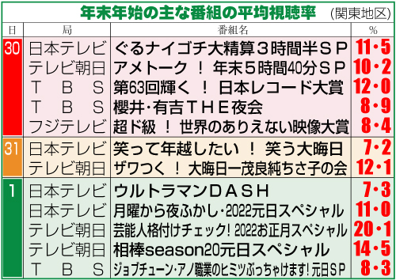

若者のテレビ離れ
私がなぜこの話題を出したかというと私自身テレビを全くと言っていいほど見なくなったのでなぜ見なくなったのかについて気になったからです。
最近の調査によると(2023年6月)によると、単身世帯のテレビ保有率は10台では5割り代後半、20代では7割弱と、若い世代ほど低くなっています。今ですでにこれほどスマホが普及しているということはいずれ若者がほとんどテレビをもたない時代が訪れると私は思います。
もし買ったとしても、それは番組を見るようではなく、YOUTUBEをテレビで見るためやNETFLIXなどの映画・ドラマを見るためだけに買う人が多くを占めることになると思います。特にテレビが世帯から消えていくことは日本の一つの時代の進歩がとても進んでいるという何よりの事象だと私は思う。 年末年始もテレビを見ながら過ごす人は年々減ってきているのではないかと私は思います。
2022ver.年末年始の主な視聴率ランキング
今年の年末年始は何が一番見られるのでしょう...